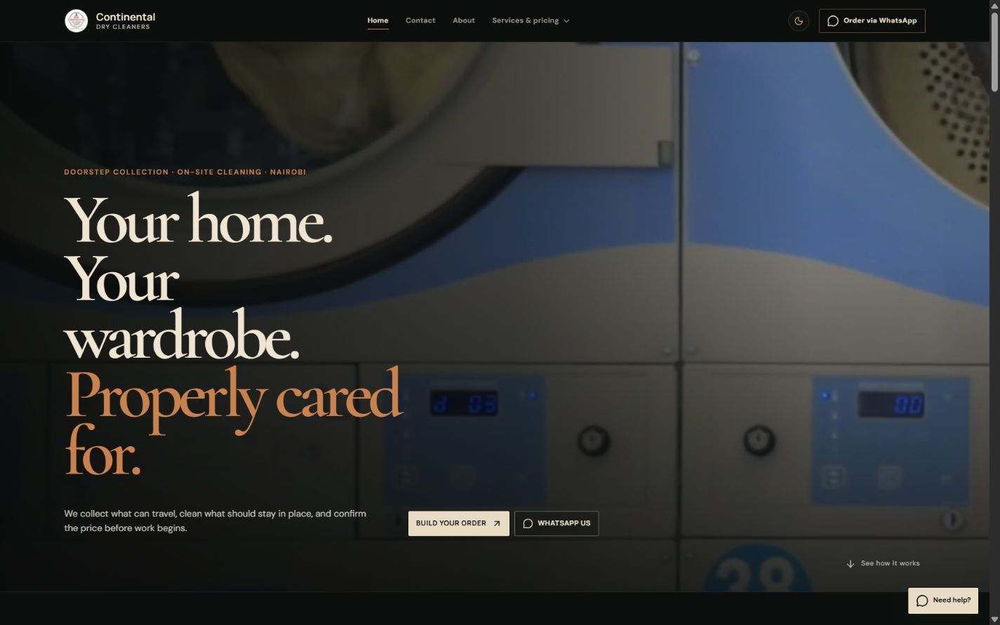

I design and build responsive products from information architecture through tested implementation, with accessibility and real user paths treated as core requirements.
Used in Continental, MedAssist and SafariGoSoftware built
to work beyond
the demo.
I’m Khalid, a software and AI engineer turning complex requirements into clear, resilient products for the web, mobile, and intelligent systems.
Based inIstanbul, TRNairobi roots
Current focusProduct systemsApplied AI + web
</>
04+Production-focused
case studies
case studies
03Engineering
disciplines
disciplines
02Cities shaping
my perspective
my perspective
Core stackReact · TypeScript · Python · FastAPI
01 / About
Engineering with
real-world context.
Useful software has to survive contact with real people, devices, networks, budgets, and uncertainty.
I grew up in Nairobi and moved to Istanbul to study software development. Working across contexts taught me to question the ideal version of a product and build for the conditions it will actually meet.
I move comfortably between product engineering and applied AI, from shaping the interface to designing APIs, data flows, evaluation, testing, and delivery.
Read the full résumé ↗02 / What I do
Capabilities built around outcomes.
Open a discipline to see how I use it.
I turn model capability into dependable product behaviour through evaluation, conservative fallbacks, semantic retrieval, OCR, and explicit handling of uncertainty.
Used in Document Platform and Water PotabilityI structure services, queues, databases, observability, CI checks, and deployment paths so the system remains understandable after launch.
Used across production and distributed architecturesI build device-conscious interfaces with focused flows, resilient state, and interaction patterns suited to mobile use rather than compressed desktop layouts.
Native and cross-platform application work03 / Selected work
Products with a
reason to exist.
Selected projects across product engineering, intelligent systems, and public-interest technology.

Live website ↗01 / Production website
Continental
Dry Cleaners
A mobile-first service and ordering experience for a real Nairobi business, with transparent pricing, guided WhatsApp conversion, theme support, and production QA.
- React 19
- TypeScript
- GSAP
- Vercel
OCRSemantic index
02 / Distributed AI
AI document platform
Four independently tested services for OCR, semantic search, authentication, queues, and observability.
- FastAPI
- Docker
- RabbitMQ
MED
ASSIST
ASSIST
13 clinics
Kenya-first care03 / Health technology
MedAssist AI
Conservative symptom guidance connected to clinic discovery, appointments, medicine ordering, and role-based administration.
- React
- AI triage
- Role systems
67.4%best test accuracy
04 / Machine learning
Water potability
A documented classification study comparing three models across 3,276 chemical measurement records.
- Python
- scikit-learn
- Evaluation
NAIROBI→MOMBASASeat 14A · Selected
05 / Product in progress
SafariGo
A Kenya-focused intercity booking product for route discovery, real-time seat state, passenger details, and confirmation.
- TypeScript
- Product design
- Private build
04 / Background
Experience meets continuous learning.
Experience
Independent software developer
Shipping web and mobile products from requirements and architecture through QA and deployment.
Software development intern
Contributed within active development cycles using collaborative workflows, maintenance, and code review.
Education
BSc Software Development
Istanbul Aydin University · AI, cloud computing, mobile development, testing, algorithms, and system design.
Independent practice
Production React systems, applied ML evaluation, distributed services, accessibility, and delivery.
05 / Let’s work together
Have a problem
worth solving?
I’m open to software engineering and applied AI opportunities. Tell me what you’re building and where it needs to go.